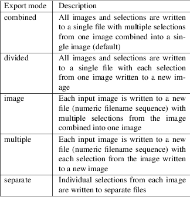

tiffcrop − select, copy, crop, convert, extract, and/or process one or more TIFF files
tiffcrop [ options ] src1.tif ⦠srcN.tif dst.tif
tiffcrop processes one or more files created according to the Tag Image File Format, Revision 6.0, specification into one or more TIFF file(s). tiffcrop is most often used to extract portions of an image for processing with bar code recognizer or OCR software when that software cannot restrict the region of interest to a specific portion of the image or to improve efficiency when the regions of interest must be rotated. It can also be used to subdivide all or part of a processed image into smaller sections and export individual images or sections of images as separate files or separate images within one or more files derived from the original input image or images.
The available functions can be grouped broadly into three classes:
|
1. |
Those that select individual images or sections of images from the input files. The options −N for sequences or lists of individual images in the input files, −Z for zones, −z for regions, −X and −Y for fixed sized selections, −m for margins, −U for units, and −E for edge reference provide a variety of ways to specify portions of the input image. | ||
|
2. |
Those that allow the individual images or selections to be exported to one or more output files in different groupings and control the organization of the data in the output images. The options −P for page size grouping, −S for subdivision into columns and rows and −e for export mode options that produce one or more files from each input image. The options −r, −s, −t, −w control strip and tile format and sizes while −B, −L, −c, −f modify the endian addressing scheme, the compression options, and the bit fill sequence of images as they are written. | ||
|
3. |
Those that perform some action on each image that is selected from the input file. The options include −R for rotate, −I for inversion of the photometric interpretation and/or data values, and −F to flip (mirror) the image horizontally or vertically. |
Functions are applied to the input image(s) in the following order: cropping, fixed area extraction, zone and region extraction, inversion, mirroring, rotation.
Functions are applied to the output image(s) in the following order: export mode options for grouping zones, regions, or images into one or more files, or row and column divisions with output margins, or page size divisions with page orientation options.
Finally, strip, tile, byte order, output resolution, and compression options are applied to all output images.
The output file(s) may be organized and compressed using a different algorithm from the input files. By default, tiffcrop will copy all the understood tags in a TIFF directory of an input file to the associated directory in the output file. Options can be used to force the resultant image to be written as strips or tiles of data, respectively.
tiffcrop can be used to reorganize the storage characteristics of data in a file, and to reorganize, extract, rotate, and otherwise process the image data as specified at the same time whereas tiffcp does not alter the image data within the file.
Using the options for selecting individual input images and the options for exporting images and/or segments defined as zones or regions of each input image, tiffcrop can perform the functions of tiffcp and tiffsplit in a single pass while applying multiple operations to individual selections or images.
|
−h |
Display the syntax summary for tiffcrop. | ||
|
−v |
Report the current version and last modification date for tiffcrop. |
−N odd|even|#,#−#,#|last
Specify one or more series or range(s) of images within each file to process. The words odd or even may be used to specify all odd or even numbered images counting from one. Note that internally, TIFF images are numbered from zero rather than one but since this convention is not obvious to most users, tiffcrop used 1 to specify the first image in a multipage file. The word last may be used in place of a number in the sequence to indicate the final image in the file without knowing how many images there are. Ranges of images may be specified with a dash and multiple sets can be indicated by joining them in a comma−separated list. eg. use −N 1,5−7,last to process the 1st, 5th through 7th, and final image in the file.
−E top|bottom|left|right
Specify the top, bottom, left, or right edge as the reference from which to calculate the width and length of crop regions or sequence of positions for zones. When used with the −e option for exporting zones or regions, the reference edge determines how composite images are arranged. Using −E left or −E right causes successive zones or regions to be merged horizontally whereas using −E top or −E bottom causes successive zones or regions to be arranged vertically. This option has no effect on export layout when multiple zones or regions are not being exported to composite images. Edges may be abbreviated to the first letter.
−e combined|divided|image|multiple|separate
Specify the export mode for images and selections from input images. The final filename on the command line is considered to be the destination file or filename stem for automatically generated sequences of files. Modes may be abbreviated to the first letter.

−U in|cm|px
Specify the type of units to apply to dimensions for margins and crop regions for input and output images. Inches or centimeters are converted to pixels using the resolution unit specified in the TIFF file (which defaults to inches if not specified in the IFD).
−m top,left,bottom,right
Specify margins to be removed from the input image. The order must be top, left, bottom, right with only commas separating the elements of the list. Margins are scaled according to the current units and removed before any other extractions are computed.
|
−X # |
Set the horizontal (X−axis) dimension of a region to extract relative to the specified origin reference. If the origin is the top or bottom edge, the X axis value will be assumed to start at the left edge. | ||
|
−Y # |
Set the vertical (Y−axis) dimension of a region to extract relative to the specified origin reference. If the origin is the left or right edge, the Y axis value will be assumed to start at the top. |
−Z #:#,#:#
Specify zones of the image designated as position X of Y equal sized portions measured from the reference edge, eg 1:3 would be first third of the image starting from the reference edge minus any margins specified for the confining edges. Multiple zones can be specified as a comma separated list but they must reference the same edge. To extract the top quarter and the bottom third of an image you would use −Z 1:4,3:3.
−z x1,y1,x2,y2: ... :xN,yN,xN+1,yN+1
Specify a series of coordinates to define regions for processing and exporting. The coordinates represent the top left and lower right corners of each region in the current units, eg inch, cm, or pixels. Pixels are counted from one to width or height and inches or cm are calculated from image resolution data.
Each colon delimited series of four values represents the horizontal and vertical offsets from the top and left edges of the image, regardless of the edge specified with the −E option. The first and third values represent the horizontal offsets of the corner points from the left edge while the second and fourth values represent the vertical offsets from the top edge.
−F horiz|vert
Flip, ie mirror, the image or extracted region horizontally or vertically.
−R 90|180|270
Rotate the image or extracted region 90, 180, or 270 degrees clockwise.
−I [black|white|data|both]
Invert color space, eg dark to light for bilevel and grayscale images. This can be used to modify negative images to positive or to correct images that have the PHOTOMETRIC_INTERPRETATION tag set incorrectly. If the value is black or white, the PHOTOMETRIC_INTERPRETATION tag is set to MinIsBlack or MinIsWhite, without altering the image data. If the argument is data or both, the data values of the image are modified. Specifying both inverts the data and the PHOTOMETRIC_INTERPRETATION tag, whereas using data inverts the data but not the PHOTOMETRIC_INTERPRETATION tag. No support for modifying the color space of color images in this release.
|
−H # |
Set the horizontal resolution of output images to #, expressed in the current units. | ||
|
−V # |
Set the vertical resolution of the output images to # expressed in the current units. | ||
|
−J # |
Set the horizontal margin of an output page size to # expressed in the current units when sectioning image into columns à rows subimages using the −S cols:rows option. | ||
|
−K # |
Set the vertical margin of an output page size to # expressed in the current units when sectioning image into columns à rows subimages using the −S cols:rows option. |
−O portrait|landscape|auto
Set the output orientation of the pages or sections. Auto will use the arrangement that requires the fewest pages. This option is only meaningful in conjunction with the −P option to format an image to fit on a specific paper size.
−P page
Format the output images to fit on page size paper. Use −P list to show the supported page sizes and dimensions. You can define a custom page size by entering the width and length of the page in the current units with the following format #.#x#.#.
−S cols:rows
Divide each image into cols across and rows down equal sections.
|
−B |
Force output to be written with Big−Endian byte order. This option only has an effect when the output file is created or overwritten and not when it is appended to. | ||
|
−C |
Suppress the use of âstrip choppingâ when reading images that have a single strip/tile of uncompressed data. | ||
|
−c |
Specify the compression to use for data written to the output file: −c none for no compression, −c packbits for PackBits compression, −c lzw for Lempel−Ziv & Welch compression, −c jpeg for baseline JPEG compression. −c zip for Deflate compression, −c g3 for CCITT Group 3 (T.4) compression, −c g4 for CCITT Group 4 (T.6) compression. By default tiffcrop will compress data according to the value of the Compression tag found in the source file. |
The CCITT Group 3 and Group 4 compression algorithms can only be used with bilevel data.
Group 3 compression can be specified together with several T.4−specific options: 1d for 1−dimensional encoding, 2d for 2−dimensional encoding, fill to force each encoded scanline to be zero−filled so that the terminating EOL code lies on a byte boundary. Group 3−specific options are specified by appending a :−separated list to the g3 option; e.g. −c g3:2d:fill to get 2D−encoded data with byte−aligned EOL codes.
LZW compression can be specified together with a predictor value. A predictor value of 2 causes each scanline of the output image to undergo horizontal differencing before it is encoded; a value of 1 forces each scanline to be encoded without differencing. LZW−specific options are specified by appending a :−separated list to the lzw option; e.g. −c lzw:2 for LZW compression with horizontal differencing.
|
−f |
Specify the bit fill order to use in writing output data. By default, tiffcrop will create a new file with the same fill order as the original. Specifying −f lsb2msb will force data to be written with the FillOrder tag set to LSB2MSB, while −f msb2lsb will force data to be written with the FillOrder tag set to MSB2LSB. | ||
|
−i |
Ignore non−fatal read errors and continue processing of the input file. |
−k size
Set maximum memory allocation size (in MiB). The default is 256MiB. Set to 0 to disable the limit.
|
−l |
Specify the length of a tile (in pixels). tiffcrop attempts to set the tile dimensions so that no more than 8 kilobytes of data appear in a tile. | ||
|
−L |
Force output to be written with Little−Endian byte order. This option only has an effect when the output file is created or overwritten and not when it is appended to. | ||
|
−M |
Suppress the use of memory−mapped files when reading images. | ||
|
−p |
Specify the planar configuration to use in writing image data that has more than one sample per pixel. By default, tiffcrop will create a new file with the same planar configuration as the original. Specifying −p contig will force data to be written with multi−sample data packed together, while −p separate will force samples to be written in separate planes. | ||
|
−r |
Specify the number of rows (scanlines) in each strip of data written to the output file. By default (or when value 0 is specified), tiffcrop attempts to set the rows/strip that no more than 8 kilobytes of data appear in a strip. If you specify the special value −1 it will results in infinite number of the rows per strip. The entire image will be the one strip in that case. | ||
|
−s |
Force the output file to be written with data organized in strips (rather than tiles). | ||
|
−t |
Force the output file to be written with data organized in tiles (rather than strips). | ||
|
−w |
Specify the width of a tile (in pixels). tiffcrop attempts to set the tile dimensions so that no more than 8 kilobytes of data appear in a tile. |
−D opt1:value1,opt2:value2,opt3:value3:opt4:value4
Debug and dump facility
Display program progress and/or dump raw data to non−TIFF files. Options include the following and must be joined as a comma separated list. The use of this option is generally limited to program debugging and development of future options. An equal sign may be substituted for the colon in option:value pairs.
debug:N:
Display limited program progress indicators where larger N increases the level of detail.
format:txt|raw:
Format any logged data as ASCII text or raw binary values. ASCII text dumps include strings of ones and zeroes representing the binary values in the image data plus identifying headers.
level:N:
Specify the level of detail presented in the dump files. This can vary from dumps of the entire input or output image data to dumps of data processed by specific functions. Current range of levels is 1 to 3.
input:full−path−to−directory/input−dumpname:
output:full−path−to−directory/output−dumpname:
When dump files are being written, each image will be written to a separate file with the name built by adding a numeric sequence value to the dumpname and an extension of .txt for ASCII dumps or .bin for binary dumps.
The four debug/dump options are independent, though it makes little sense to specify a dump file without specifying a detail level.
Note: tiffcrop may be compiled with −DDEVELMODE to enable additional very low level debug reporting.
However, not all option combinations are permitted.
Note 1: The (−X|−Y), −Z, −z and −S options are mutually exclusive. In no case should the options be applied to a given selection successively.
Note 2: Any of the −X, −Y, −Z and −z options together with other PAGE_MODE_x options such as −H, −V, −P, −J or −K are not supported and may cause buffer overflows.
The following concatenates two files and writes the result using LZW encoding:
tiffcrop −c lzw a.tif b.tif result.tif
To convert a G3 1d−encoded TIFF to a single strip of G4−encoded data the following might be used:
tiffcrop −c g4 −r 10000 g3.tif g4.tif
(1000 is just a number that is larger than the number of rows in the source file.)
To extract a selected set of images from a multi−image TIFF file use the −N option described above. Thus, to copy the 1st and 3rd images of image file album.tif to result.tif:
tiffcrop −N 1,3 album.tif result.tif
Invert a bilevel image scan of a microfilmed document and crop off margins of 0.25 inches on the left and right, 0.5 inch on the top, and 0.75 inch on the bottom. From the remaining portion of the image, select the second and third quarters, ie, one half of the area left from the center to each margin:
tiffcrop −U in −m 0.5,0.25,0.75,0.25 −E left −Z 2:4,3:4 −I both MicrofilmNegative.tif MicrofilmPostiveCenter.tif
Extract only the final image of a large Architectural E sized multipage TIFF file and rotate it 90 degrees clockwise while reformatting the output to fit on tabloid sized sheets with one quarter of an inch on each side:
tiffcrop −N last −R 90 −O auto −P tabloid −U in −J 0.25 −K 0.25 −H 300 −V 300 Big−PlatMap.tif BigPlatMap−Tabloid.tif
The output images will have a specified resolution of 300 dpi in both directions. The orientation of each page will be determined by whichever choice requires the fewest pages. To specify a specific orientation, use the portrait or landscape option. The paper size option does not resample the image. It breaks each original image into a series of smaller images that will fit on the target paper size at the specified resolution.
Extract two regions 2048 pixels wide by 2048 pixels high from each page of a multi−page input file and write each region to a separate output file:
tiffcrop −U px −z 1,1,2048,2048:1,2049,2048,4097 −e separate CheckScans.tiff Check
The output file names will use the stem Check with a numeric suffix which is incremented for each region of each image, eg Check−001.tiff, Check−002.tiff ⦠Check−NNN.tiff. To produce a unique file for each page of the input image with one new image for each region of the input image on that page change the export option to −e multiple.
In general, bilevel, grayscale, palette and RGB(A) data with bit depths from 1 to 32 bits should work in both interleaved and separate plane formats. Unlike tiffcp, tiffcrop can read and write tiled images with bits per sample that are not a multiple of 8 in both interleaved and separate planar format. Floating point data types are supported at bit depths of 16, 24, 32 and 64 bits per sample.
Not all images can be converted from one compression scheme to another. Data with some photometric interpretations and/or bit depths are tied to specific compression schemes and vice−versa, e.g. Group 3/4 compression is only usable for bilevel data. JPEG compression is only usable on 8 bit per sample data (or 12 bit if libtiff was compiled with 12 bit JPEG support). Support for OJPEG compressed images is problematic at best. Since OJPEG compression is no longer supported for writing images with LibTIFF, these images will be updated to the newer JPEG compression when they are copied or processed. This may cause the image to appear color shifted or distorted after conversion. In some cases, it is possible to remove the original compression from image data using the option −c none.
tiffcrop does not currently provide options to up or downsample data to different bit depths or convert data from one photometric interpretation to another, e.g. 16 bits per sample to 8 bits per sample or RGB to grayscale.
tiffcrop is very loosely derived from code in tiffcp with extensive modifications and additions to support the selection of input images and regions and the exporting of them to one or more output files in various groupings. The image manipulation routines are entirely new and additional ones may be added in the future. It will handle tiled images with bit depths that are not a multiple of eight that tiffcp may refuse to read.
tiffcrop was designed to handle large files containing many moderate sized images with memory usage that is independent of the number of images in the file. In order to support compression modes that are not based on individual scanlines, e.g. JPEG, it now reads images by strip or tile rather than by individual scanlines. In addition to the memory required by the input and output buffers associated with libtiff one or more buffers at least as large as the largest image to be read are required. The design favors large volume document processing uses over scientific or graphical manipulation of large datasets as might be found in research or remote sensing scenarios.
pal2rgb (1), tiffinfo (1), tiff2cmp (1), tiffcp (1), tiffmedian (1), tiffsplit (1), libtiff (3tiff)
LibTIFF contributors
1988-2022, LibTIFF contributors